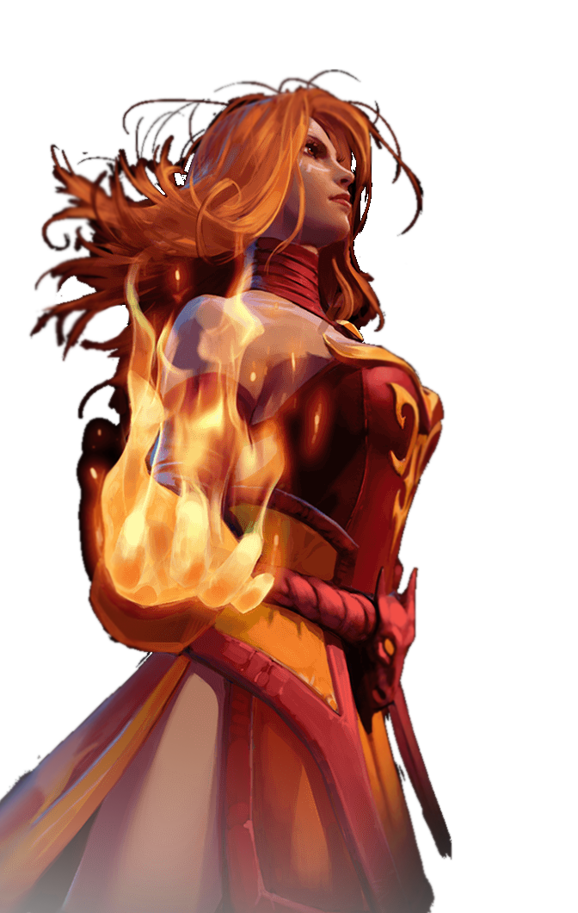

About Me
Lina, the Slayer, is a ranged intelligence hero, adept at destroying enemy heroes quickly by delivering massive bursts of magical damage, making her one of the most effective gankers in the game. She possesses immense damaging capabilities all throughout the game, but is very fragile. Two of her fiery spells are her main source of damage, Dragon Slave sends a wave of fire to burn enemies in her path while Light Strike Array stuns them with a concentrated pillar of solar flame. Each of her spells deals great damage early on and has a low cooldown. Her Fiery Soul bolsters her attack and movement speed every time she casts a spell, which gives her scaling damage for the later game. Laguna Blade, her ultimate, is her ace in the hole. Lina fires off a huge bolt of lightning at a single target, dealing colossal damage. Laguna Blade's damage is staggering in early-mid game, and late game is still enough to destroy frail enemy heroes. Dragon Slave, Light Strike Array, and Laguna Blade are incredible flaming nukes that can incinerate her target instantly, and Fiery Soul allows her to transition into a strong and fast physical attacker. Though her power falls from its peak late game, mana-boosting and damage-increasing items can be purchased to keep herself up.
The sibling rivalries between Lina the Slayer, and her younger sister Rylai, the Crystal Maiden, were the stuff of legend in the temperate region where they spent their quarrelsome childhoods together. Lina always had the advantage, however, for while Crystal was guileless and naive, Lina's fiery ardor was tempered by cleverness and conniving. The exasperated parents of these incompatible offspring went through half a dozen homesteads, losing one to fire, the next to ice, before they realized life would be simpler if the children were separated. As the oldest, Lina was sent far south to live with a patient aunt in the blazing Desert of Misrule, a climate that proved more than comfortable for the fiery Slayer. Her arrival made quite an impression on the somnolent locals, and more than one would-be suitor scorched his fingers or went away with singed eyebrows, his advances spurned. Lina is proud and confident, and nothing can dampen her flame.
Abilities
Like her younger sister, Lina's elemental affinity was the source of many headaches. Sent south to live with a patient aunt, she learned to master her Fiery Soul in the blazing Desert of Misrule. Channeling the breath of Desert Wyrms, she unleashes her Dragon Slave to burn a path before her. Attuned to fire, Lina ignites the ground with Light Strike Array, incinerating foes in a column of flame. Even the hardiest of heroes fear the Slayer's signature spell: The Laguna Blade. Focusing every bit of heat around her, Lina fires a condensed bolt of white-hot energy, instantly terminating her opponent with minimal struggle or effort.